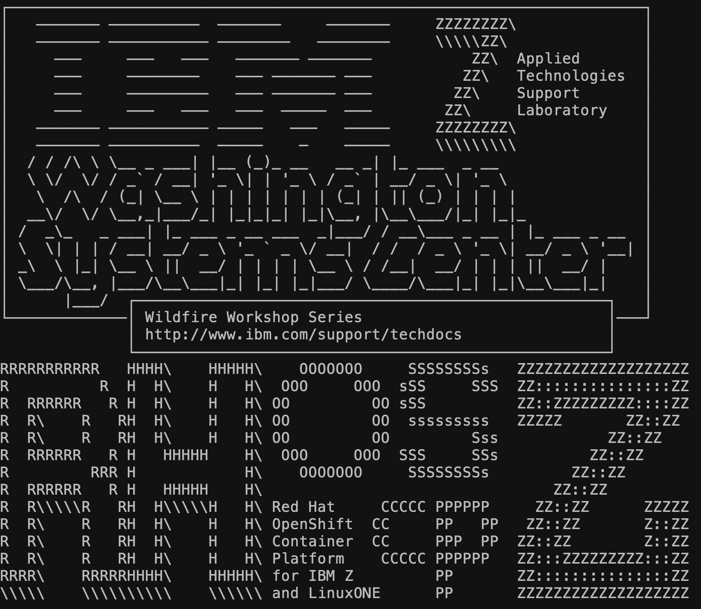

Log Into OpenShift Using the CLI¶
In this section, you will be connecting to a “Linux Guest” server which has a few things set up to make your life a little easier. Most notably, it has the OpenShift command line oc installed, so you don’t have to install it on your RHEL VM terminal.
-
Open a Terminal session
-
ssh into the Linux Guest server:
ssh userNN@192.168.176.61Where
NNis your user number. -
When prompted, enter your password:
p@ssw0rdand hit enter.Example Output

-
In Firefox, navigate to the following URL to request an API token:
https://oauth-openshift.apps.atsocppa.dmz/oauth/token/request
-
Enter your OpenShift credentials when prompted.
-
Username:
userNN -
Password:
p@ssw0rd
-
-
Click the “Display Token” hyperlink.

-
Copy the contents of the first text box beginning with “oc login” and ending with “6443”.

-
Paste this command back in your terminal session and press enter.
Important
If you’re prompted to use an insecure connection, type Y and hit enter.
oc login --token=<YOUR_TOKEN_HERE> --server=https://api.atsocppa.dmz:6443Example Output
user01@lab061:~$ oc login --token=uL3fHEPSGH3io0htdGRfAMAPIIY44BhwnGxCMA3dei4 --server=https://api.atsocppa.dmz:6443 Logged into "https://api.atsocppa.dmz:6443" as "user01" using the token provided. You have access to 161 projects, the list has been suppressed. You can list all projects with 'oc projects' Using project "user01-project".You are now logged into the cluster via the command line, and you are told which project you are using.
If you’re in a project other than userNN-project, use the following command to move into it: oc project userNN-project, where NN is your user number.